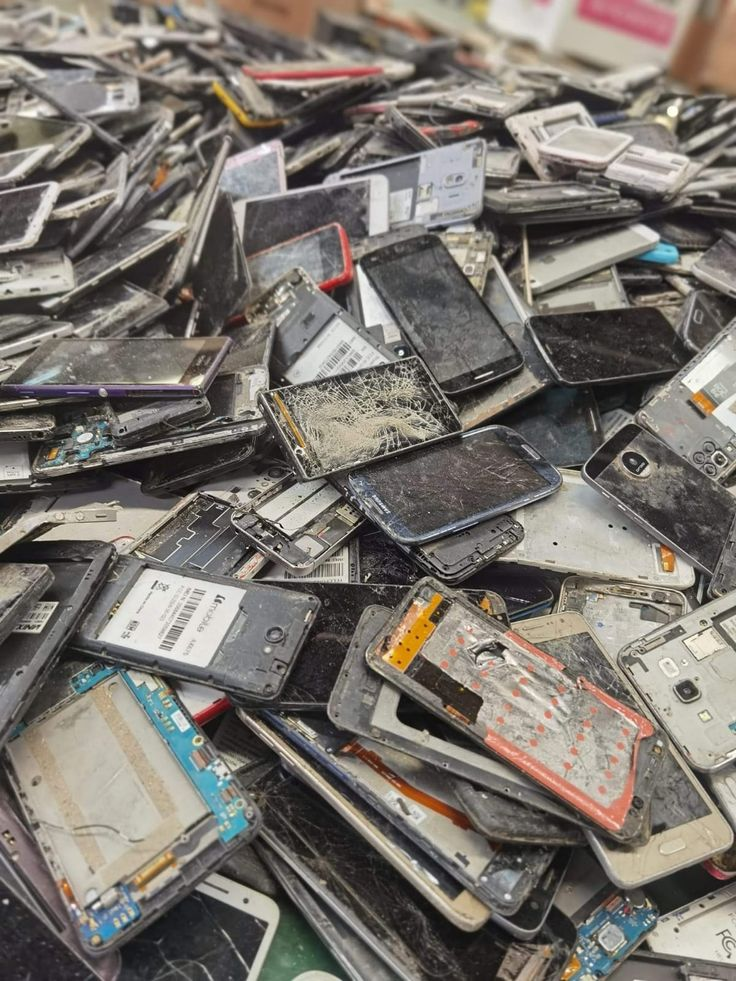
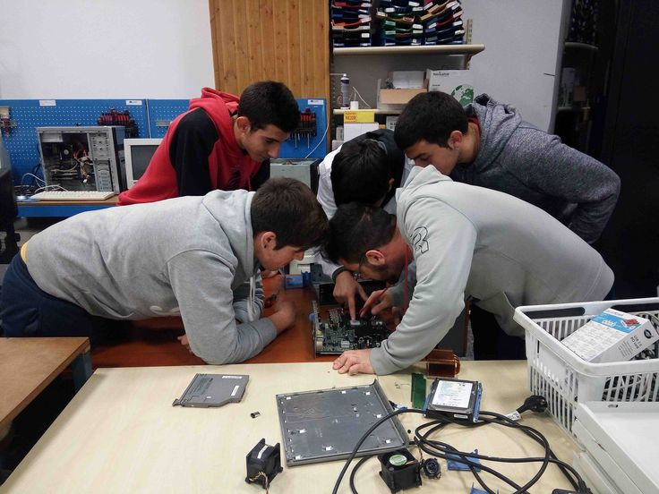
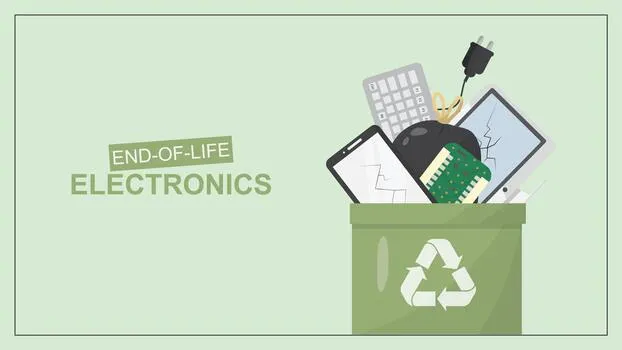

Impacto Ambiental de los Residuos Tecnológicos en la Educación
Hoy en día, las escuelas son motores de digitalización, pero esta transformación tecnológica trae consigo una responsabilidad invisible: la gestión de sus residuos. A continuación, analizamos el impacto, las causas y las soluciones para un consumo escolar más consciente.
El impacto ambiental de los desechos
El vertiginoso recambio tecnológico escolar genera una acumulación peligrosa de Residuos de Aparatos Eléctricos y Electrónicos (RAEE). El problema no es solo el volumen, sino la composición de estos objetos.
● Materiales peligrosos bajo la carcasa: Computadoras, monitores y tablets en desuso contienen metales pesados como plomo, mercurio, cadmio y arsénico. Mientras el equipo está entero no hay peligro, pero al romperse, estas sustancias quedan expuestas. Los dispositivos electrónicos que sostienen la infraestructura pedagógica actual albergan en su arquitectura interna una compleja, refinada y peligrosa amalgama de elementos químicos.
Sin embargo, en el momento exacto en que estos equipos sufren roturas por caídas o quedan arrumbados en depósitos escolares expuestos a la humedad y falta de ventilación, se inicia un proceso de degradación material irreversible. Sustancias de extrema peligrosidad como el plomo, el mercurio, el cadmio y el arsénico pierden su aislamiento hermético, transformando el inventario en una acumulación silenciosa de alto riesgo.

● Contaminación silenciosa del entorno: Cuando las escuelas descartan estos equipos en la basura común, terminan en basurales a cielo abierto. Con las lluvias, los químicos tóxicos se filtran, contaminando las capas de suelo y llegando a las fuentes de agua subterránea que abastecen a la población.
La alta concentración de metales pesados inhibe y extingue la actividad microbiana y fúngica necesaria para la correcta descomposición de la materia orgánica. Las plantas de la zona absorben estas sustancias nocivas a través de sus raíces mediante un proceso de fitotoxicidad, lo que bloquea su capacidad de fotosíntesis.

El Rol del Consumo Escolar y la Cultura del Descarte
Las instituciones educativas suelen quedar atrapadas en dinámicas de consumo que aceleran la generación de basura digital.
● El freno de la obsolescencia programada: Muchos dispositivos educativos están diseñados para durar pocos años. Las actualizaciones de software dejan obsoletos a equipos que físicamente están impecables, forzando a las escuelas a renovar aulas digitales enteras de manera constante. Cada nueva versión de software exige de manera estricta mayores capacidades de memoria RAM y procesadores más modernos. Como consecuencia, lotes enteros de netbooks escolares o tablets físicamente impecables quedan repentinamente catalogadas como inutilizables.

● Falta de cultura de reparación: Existe una tendencia generalizada a descartar antes que reparar. En muchos casos, un laboratorio de informática entero queda archivado o se tira por fallas menores (como baterías agotadas o pantallas rotas) o simplemente por no contar con personal técnico que optimice el sistema operativo existente. Esta alarmante falta de cultura de reparación sistemática prioriza la lógica del reemplazo total sobre la restauración.
Soluciones y Oportunidades:
El ámbito educativo es el lugar ideal para transformar este problema en una oportunidad de aprendizaje y acción comunitaria.
● Protocolos de Disposición Responsable y el Auge de la Minería Urbana: La solución definitiva radica en el establecimiento obligatorio de protocolos internos de disposición final responsable. Las escuelas deben prohibir descartar componentes tecnológicos en la basura común y coordinar la entrega con plantas de tratamiento de RAEE autorizadas o cooperativas técnicas certificadas.
En estos centros se aplica el concepto de la "minería urbana": se desensamblan los dispositivos aislando los químicos peligrosos y recuperando mediante procesos mecánicos materias primas puras de altísimo valor como oro, plata, cobre y aluminio. Esto permite que estos recursos reingresen al circuito industrial, reduciendo la necesidad de la minería extractivista tradicional.

Ejemplos Reales
El peso del descarte: Una sala de informática vieja con 20 computadoras de tubo (CRT) en desuso acumula aproximadamente 60 kilos de plomo, un metal altamente neurotóxico.
El depósito de monitores TRC olvidados: En el sótano de una escuela, tras una inundación, la humedad rompe el vidrio de protección de monitores viejos de tubo. El plomo (3 kg por monitor) entra en contacto con el agua estancada y se filtra hacia las napas de agua del barrio.
La quema informal en el barrio: En un terreno baldío se quema cableado viejo para extraer el cobre. Al quemarse el plástico PVC, se libera un humo negro cargado de dioxinas y furanos que el viento arrastra hacia el patio de la escuela durante el recreo, exponiendo a alumnos a gases tóxicos.